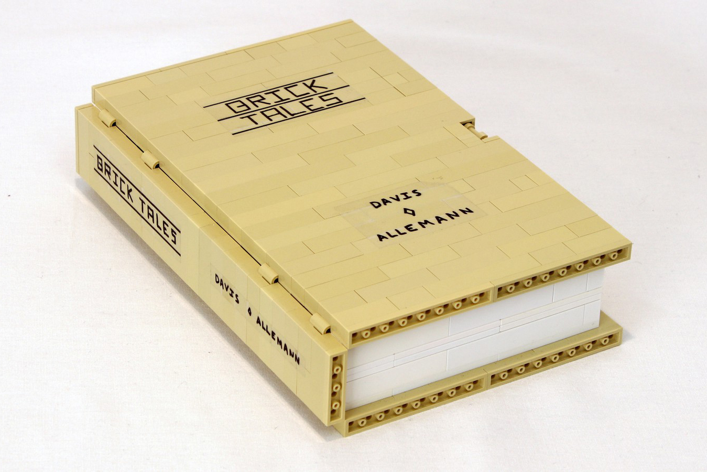
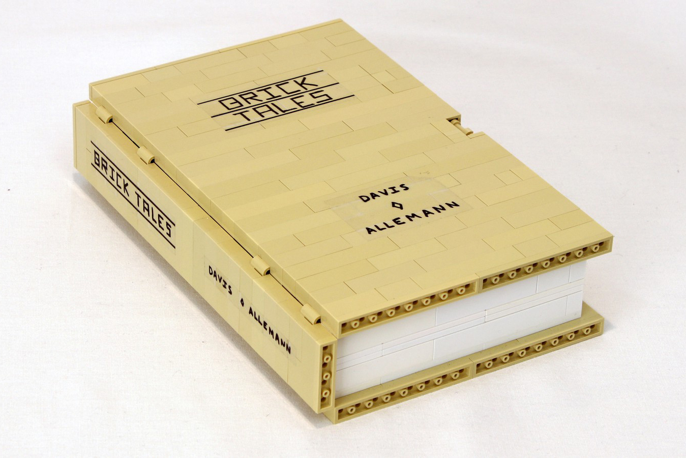
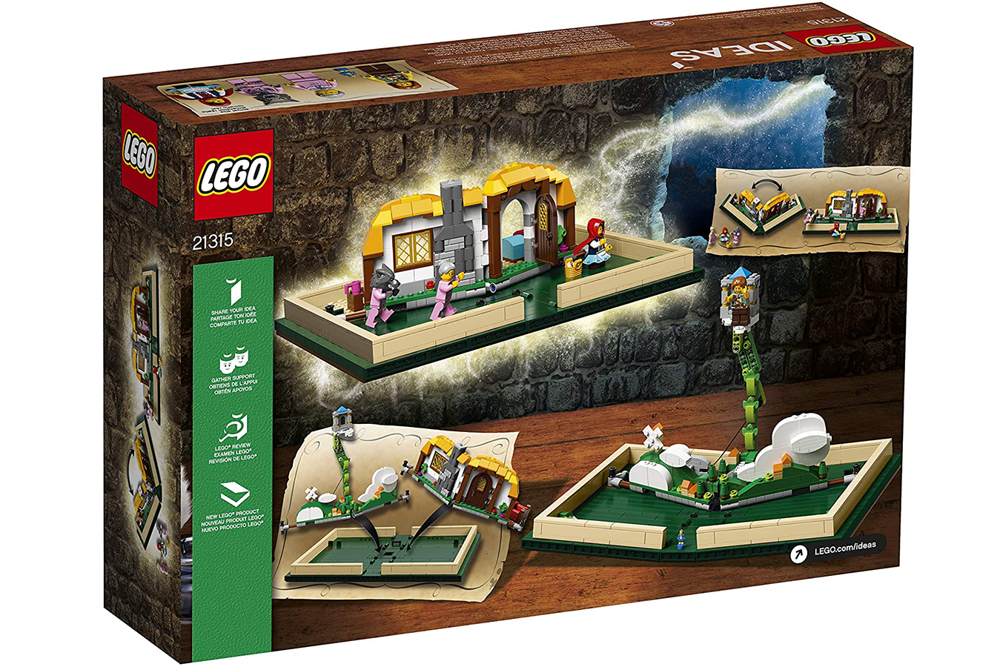
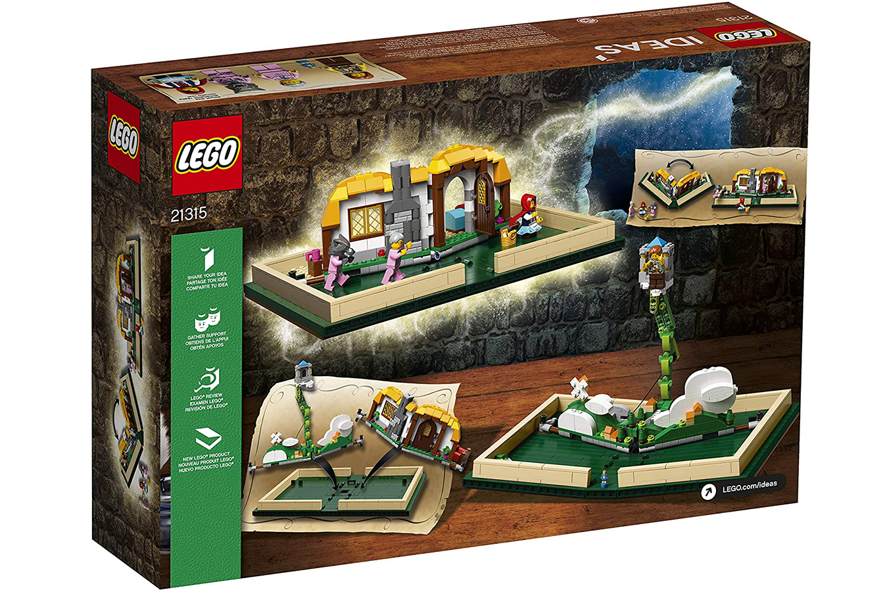

POPUP BOOK
This page outlines the development of my LEGO Popup Book Prototype, documenting the main design stages the model went through and the improvements made along the way.
The first version of my popup book began in early 2014 and was posted by November of that year. The essential elements of the model that I wanted to include were keeping the creation about the size of an actual book, ensuring the cover of the book lacked major gaps, and enabling different themes to be inserted inside a single book cover.
Due to the tan cover, I chose to pick themes for the inserts that would not look out of place in a sandy landscape: a desert outpost and space base. One additional idea used in this first prototype build was the use of Spring-legs from the Basketball line to allow minifigures to be folded up inside the book.
A few years after my initial prototype in 2016, I set out to expand more on this design and post it to LEGO ideas. I thought that the driving concept behind the creation had potential, and was not just interesting to fellow fan builders like myself, but to kids all around the world.
One fatal flaw with my initial design was that the popup mechanism, powered by rubber bands, was anything but consistent. To try to solve this problem, I got in contact with technic master Jason Alleman who immediately got to work on developing the sturdy axle-based mechanism seen below. I feel that the project

After several more months of iteration and development, Jason and I finally published the first draft of our book to LEGO ideas in 2017. The main ideas behind the book remained largely the same, but Jason did have the idea to move from different themes being inserted into the book, to different stories, which is much more tangible. Functionally, in addition to the new popup mechanism the book moved from 5 bricks thick to 6, adding some much needed strength to the book’s spine and allowing for inserts to now be 2 studs wide on either side providing much more room for details.
After we posted the project, it reached 10,000 votes in around 9 months, and was slated to be reviewed in early 2018. In January I was told that the set had been approved and a final redesign of the idea began.
The most significant change made was the book cover from tan to dark green. At the time of my first prototype, having a dark green cover crossed my mind, but was limited by hinge availability, so when the idea of simply producing them in order to make the cover possible came up, I was all for it. Other great additions found in the final set include the micro figure of Jack from Jack and the Beanstalk, the castle popup mechanism, and the “Once Upon A Brick” art on the cover.
In November of 2018 I had the opportunity of doing a set signing event at my local LEGO store with Jason right before the set’s release date. It was a huge blessing to see so many people lined up wanting a copy of my set with our signatures on it.
The best part of this entire experience however, has to be the 1x6 brown tile with the word “Davis” printed on it (Element ID 6636pb168).


 



 
